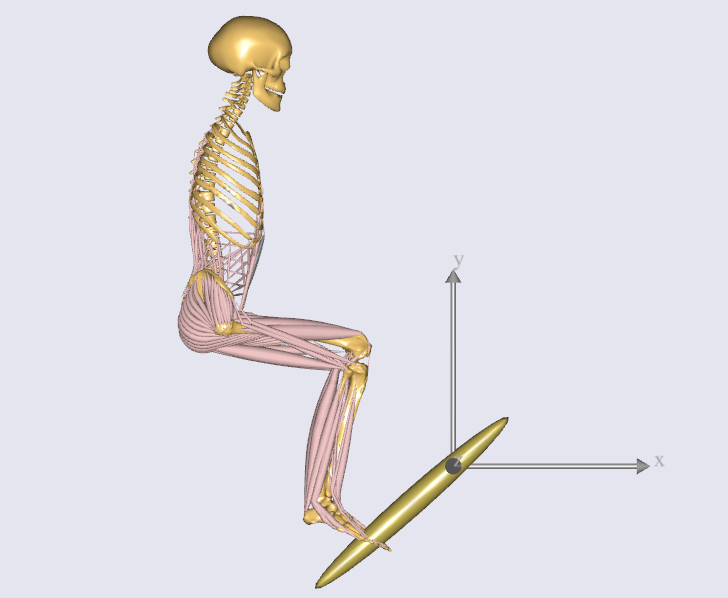
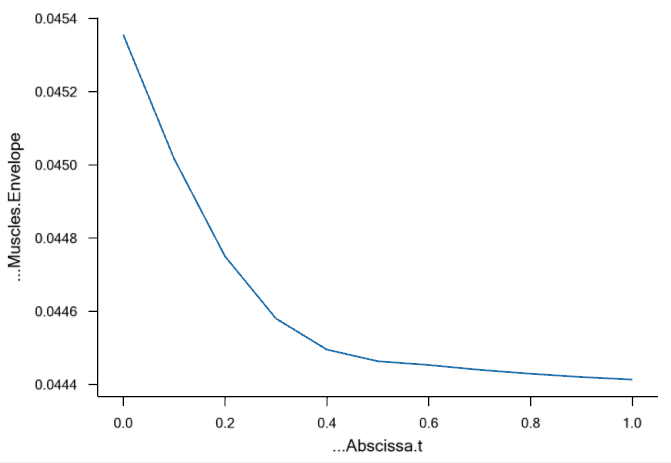

Lesson 4: Kinetics - Computing Forces
Contents
Lesson 4: Kinetics - Computing Forces#
In this lesson, you will compute forces and investigate the ergonomics of the pedal arrangement.
We will presume that the pedal is loaded by a spring, the force of which the leg must overcome when stepping on the pedal. In this lesson, we will step by step define the spring force and look at its effect on the leg.
Generalized forces#
When you say “a support torque applied to a joint”, in AnyBody terms, you are saying - “A generalized force applied to a kinematic measure of the joint angle”.
Similarly “a force applied to a segment along Y axis” becomes - “A generalized force applied to the Y component of a measure of the segment’s position”.
Note
Since AnyBody speaks the language of generalized forces, we will simply call them “forces” henceforth. Physically speaking, this generalized force will manifest as a rotational torque or a linear force, depending on the type of measure it is applied to.
You must create an AnyForce object in order to apply a generalized force to a measure.
Include pedal spring force#
We will therefore create an AnyForce object, for applying the spring force.
Since this is not a part of the human body, it is logical to place it in the Environment.any file. Here’s what
to add:
...
AnyRevoluteJoint HingeJoint = {
Axis = z;
AnyFixedRefFrame &Ground = .GlobalRef;
AnyRefNode &Pedal = .Pedal.Hinge;
};
AnyForce Spring = {
AnyRevoluteJoint &Hinge = .HingeJoint;
F = -0.0*.HingeJoint.Pos;
};
The AnyForce object named “Spring” contains a reference to the “HingeJoint”. Since HingeJoint
is a rotational measure, the force is actually a torque applied to the hinge.
F is the actual generalized force vector, with each vector component corresponding to a
component of the kinematic measure. F is proportional to HingeJoint.Pos,
which is the hinge angle. Stiffness is initially set to 0.0 (Nm/rad), to investigate the effect of having
no spring. The minus sign in the expression means that the spring will always oppose motions away from the neutral angle.
Turn off default reaction forces#
As mentioned in this previous section, the “Reaction.Type” property for all kinematic drivers that act on muscle-actuated joints must be set to “Off”.
AnyFolder Drivers =
{
AnyKinEqSimpleDriver PelvisThoraxDriver =
{
AnyKinMeasure& ref0 = ...HumanModel.BodyModel.Interface.Trunk.PelvisThoraxExtension;
AnyKinMeasure& ref1 = ...HumanModel.BodyModel.Interface.Trunk.PelvisThoraxLateralBending;
AnyKinMeasure& ref2 = ...HumanModel.BodyModel.Interface.Trunk.PelvisThoraxRotation;
DriverPos = pi/180*{0,0,0};
DriverVel = pi/180*{0,0,0};
Reaction.Type = {Off, Off, Off};
};
AnyKinEqSimpleDriver SkullThoraxDriver =
{
AnyKinMeasure& ref0 = ...HumanModel.BodyModel.Interface.Trunk.SkullThoraxFlexion;
AnyKinMeasure& ref1 = ...HumanModel.BodyModel.Interface.Trunk.SkullThoraxLateralBending;
AnyKinMeasure& ref2 = ...HumanModel.BodyModel.Interface.Trunk.SkullThoraxRotation;
DriverPos = pi/180*{0,0,0};
DriverVel = pi/180*{0,0,0};
Reaction.Type = {Off, Off, Off};
};
AnyKinEqSimpleDriver AnkleDriver =
{
AnyKinMeasure& ref0 = ...HumanModel.BodyModel.Interface.Right.AnklePlantarFlexion;
AnyKinMeasure& ref1 = ...HumanModel.BodyModel.Interface.Right.SubTalarEversion;
DriverPos = pi/180*{0, 0};
DriverVel = pi/180*{0, 0};
Reaction.Type = {Off, Off};
};
AnyKinEqSimpleDriver KneeDriver =
{
AnyKinLinear lin =
{
AnyRefFrame& ref0 = Main.Model.Environment.GlobalRef;
AnyRefFrame& ref1 = Main.HumanModel.BodyModel.Right.Leg.Seg.Thigh.KneeJoint;
Ref = 0;
};
MeasureOrganizer = {2};
DriverPos = {0};
DriverVel = {0};
Reaction.Type = {Off};
};
AnyKinEqSimpleDriver PedalDriver =
{
AnyKinMeasure &ref0 = Main.Model.Environment.HingeJoint;
DriverPos = pi/180*{100};
DriverVel = pi/180*{45};
Reaction.Type = {Off};
};
};
You should also remove the additional reactions on the pelvis which are created by the model template. The purpose of these additional reactions on the pelvis is to provide the necessary supports on the human pelvis to run the inverse dynamics if users may not define enough support forces on either both feet or pelvis.
Since your model has a joint named “SeatPelvis” between ground and pelvis (which will apply the default reaction forces), you can comment out “Model\Reactions.any” in the main file:
...
AnyFolder Model = {
AnyFolder &BodyModel = .HumanModel.BodyModel;
AnyFolder &DefaultMannequinDrivers = .HumanModel.DefaultMannequinDrivers;
#include "Model\Environment.any"
AnyFolder ModelEnvironmentConnection = {
#include "Model\JointsAndDrivers.any"
//#include "Model\Reactions.any"
};
};
...
Adding muscles#
There is one more thing we have to do: The human model has no muscles at
the moment. This can be corrected by a simple change of BM statements in
the Model/BodyModelConfiguration.any file:
// Excluding the muscles in the trunk segments
#define BM_TRUNK_MUSCLES _MUSCLES_SIMPLE_
// Excluding the left arm segments
#define BM_ARM_LEFT OFF
// Excluding the right arm segments
#define BM_ARM_RIGHT OFF
// Excluding the left leg segments
#define BM_LEG_LEFT OFF
// Excluding the muscles in the right leg segments
#define BM_LEG_MUSCLES_RIGHT _MUSCLES_SIMPLE_
//Excluding the default drivers for the human model
#define BM_MANNEQUIN_DRIVER_DEFAULT OFF
Investigating results#
Now, reload the model and run the RunApplication operation from the operations drop-down menu:

Plot Main.Study.Output.Model.BodyModel.SelectedOutput.Right.Leg.Muscles.Envelope (see this for help).
It expresses the maximum muscle activation level seen across all the muscles
in the right leg at a given instant:

Obviously holding the leg out in the air like that without the support of a pedal spring and holding up the weight of the pedal as well requires about 6% to 9% of the leg’s strength.
Now, let us study the effect of spring stiffness. In Environment.any, we change the spring stiffness:
F = -10*.HingeJoint.Pos;
This produces the following envelope curve:

Obviously, the level is lower now. The envelope is at around 2%, so the spring really seems to help. This can make it easier for the operator to control the pedal and thereby enhance the operability.
The completed model is available here:
PedalModel.zip.
The AnyBody Modeling System is all about making this type of investigation easy. The mechanical model we have put together in four simple lessons has a complexity worthy of a Ph.D. project if you develop it bottom up. In AnyBody, this is a matter of a few hours of work when using the predefined models of the repository.